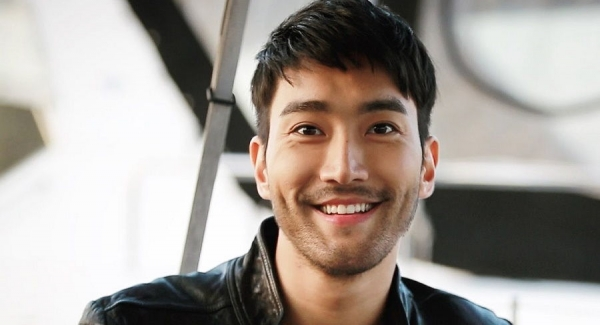

Choi Si-won (Korean: 최시원; Hanja: 崔始源; born 7 April 1986) is a South Korean singer, songwriter, model, and actor known for his work as a member of South Korean boy group Super Junior. Choi committed as special representative of UNICEF Korea for children’s issues over the last four years before he was chosen as UNICEF regional ambassador for East Asia and Pacific in November 2019.
Aside from being a member of Super Junior, Choi has also ventured into solo activities, mainly acting. He played lead roles in the Korean dramas Oh! My Lady (2010), Poseidon (2011), Revolutionary Love (2017), and My Fellow Citizens! (2019) and had supporting roles in Athena: Goddess of War (2010), The King of Dramas (2012) and She Was Pretty (2015). Choi has also participated in various Chinese language films such as Helios, To the Fore and Dragon Blade .
Name: Choi Si-Won
Hangul: 최시원
Birthdate: February 10, 1987
Birthplace: Seoul, South Korea
Height: 183cm
Blood Type: B
Twitter: @siwon407
She Was Pretty | Geunyeoneun Yeppeodda (MBC / 2015) - Kim Shin-Hyuk
Revolutionary Love | Byunhyukui Sarang (tvN / 2017) - Byun-Hyuk